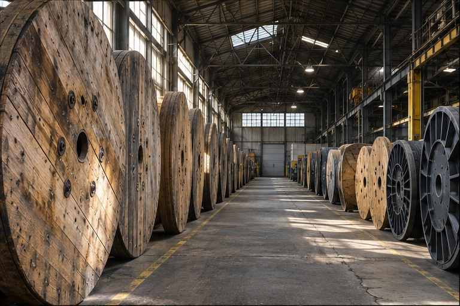

About Murpac
A family-owned business with more than 30 years of experience in the wire spool industry.

Keeping packaging in use
Our work in the magnet wire industry centres on refurbishing the spools manufacturers use every day. The same approach applies wherever manufacturers rely on packaging that can make more than one trip.
We work with customers and suppliers to understand what comes back, what can be repaired and how to get it where it needs to go. Reusing that packaging reduces waste and the need for new materials.
Serving manufacturers across North America
Our four facilities support customers in Canada and the United States, including businesses in the manufacturing and energy sectors.
Find a location